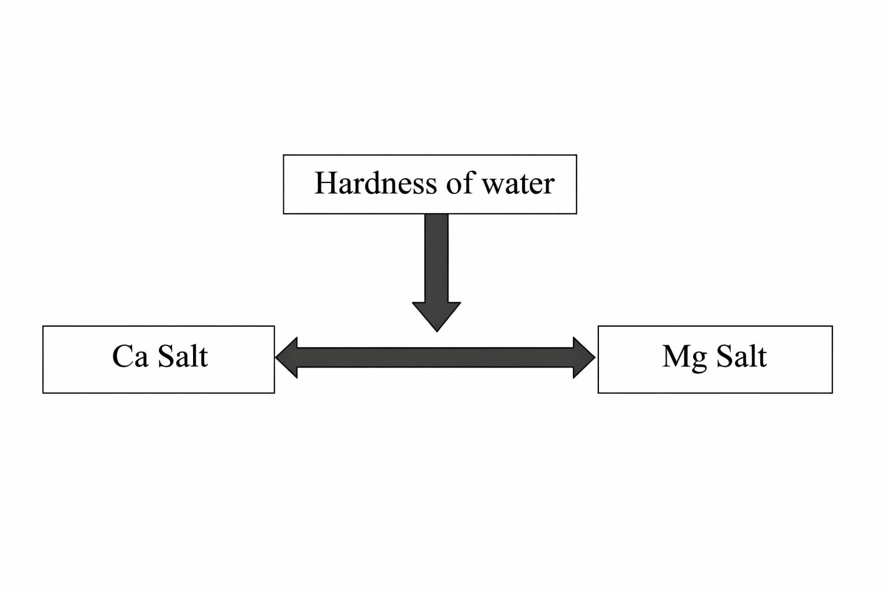
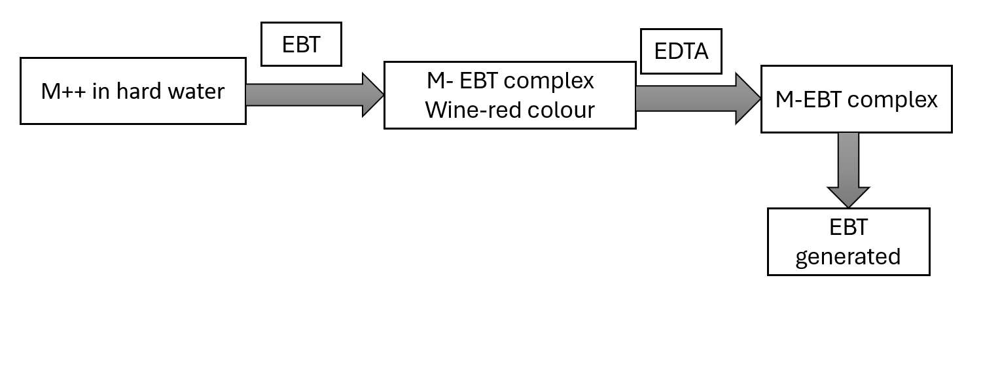
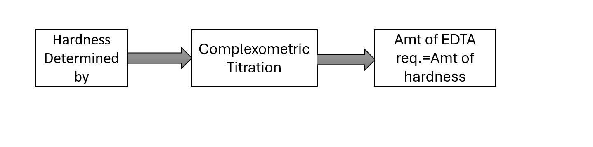
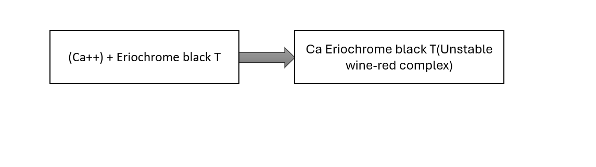
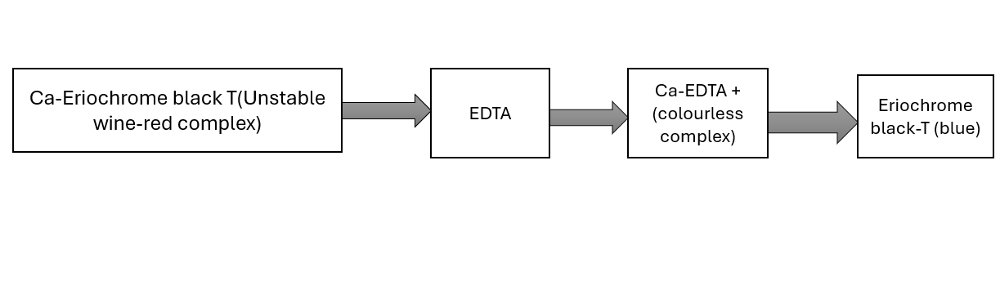
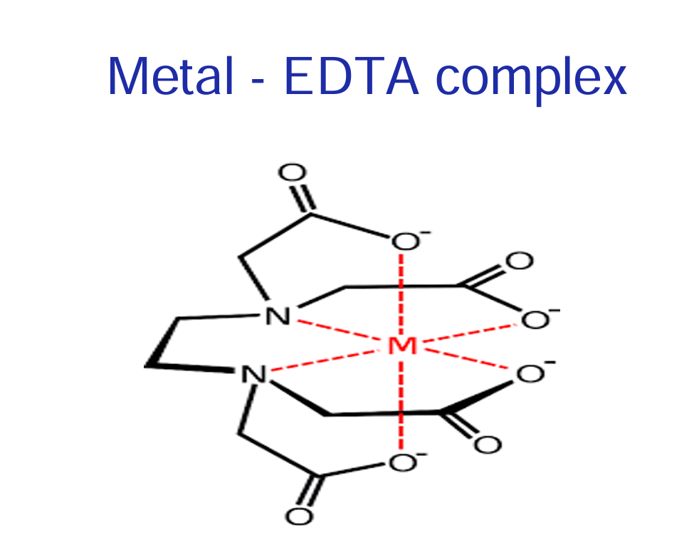
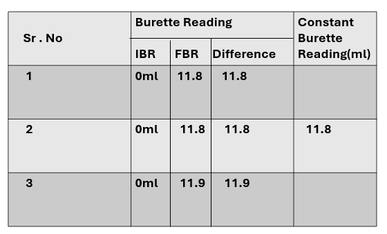
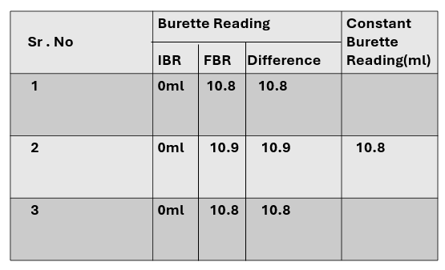

Determination of total hardness of water by EDTA method.
Hard water,effect of hard water,hardness causing agents.
Complex formation,EDTA,EBT,Ligand.
Hardness of water is due to the presence of Ca and Mg salts in it.

Na2EDTA (Disodium salt od ethylene diamine tetra acetic acid) is used for determination of hardness by virtue of its stability and its complex forming efficiency with Ca+2 and Mg+2 from hard water. EBT(Eriochrome black-T) is used as an indicator in above complexometric titration.EBT forms wine red complex with Ca/Mg ions.Addition of EDTA displaces these ions and formation of colorless EDTA-M complex with regeneration of blue colored dye takes place.This changes in color from red to blue marks the end point of titration.

From the amount(ml) of standard solution of di sodium-EDTA required during complexometrix titration with hard water,the amount of hardness present in hard water sample(in ppm) is calculated.




EDTA,Eriochrome black T,ZnSO4,hard water sample.
Burette,pipette,conical flask,etc.
Rinse and fill the burette with little amount of EDTA and fill it up to the mark.Pipette out 10ml ZnSO4 solution and into it 5ml of buffer solution having pH 10.Add 4-5 drops of Eriochrome black T indicator. Titrate this solution against Na2EDTA till wine red color changes to sky blue. Repeat the procedure for three times untill constant readings are obtained and find out molarity of EDTA solution(M2).
Fill the burette with EDTA solution up to mark.Pipette out 10ml of water sample and add to it 5ml of buffer solution having the pH 10.Add ti it 3-4 drops of Eriochrome black T indicator.Titrate this solution against EDTA till wine red color changes to sky blue. Repeat the procedure for three times untill readings are constant obtained and find out the hardness of water sample.
Observation Table:

Observation Table:

(I) Standardization of EDTA solution:
ZnSO4 = EDTA
M1V1 = M2V2
0.01*10 = M2*CBR
M2 = 0.01 * 10/CBR
M2 = 0.01 * 10/11.8
M2 = 8.47 * 10-3
Hence excat molarity of EDTA solution is = 8.47 * 10-3molar
(II) Estimation of total hardness:
1000 ml 1M EDTA = 1mole of CaCO3 = 100gm of CaCO3
"X"ml M2 M EDTA = X1*M2*100/1000
0.00847 gm of CaCO3
If 10ml of hardness sample contains 0.00847 gm of CaCO3
1000ml of hard water sample contains 0.842 gm of CaCO3
Mg of CaCO3 per liter hard water = 0.847 * 1000
847 ppm
Results: Total hardness of water sample = 847 ppm
1. What is hard water?
Hard water is water with a high concentration of dissolved minerals, primarily calcium(Ca) and magnesium(Mg), picked up as it moves through limestone and chalk deposits.
2. Which salts give hardness to water?
Hardness in water is primarily caused by dissolved salts of calcium(Ca) and magnesium(Mg), especially their bicarbonates(HCO3-), chloride(Cl-), and sulfates(SO₄²⁻).
3.What are units of hardness?
1. Parts per million (ppm)
Most commonly used unit
1 ppm = 1 mg of CaCO₃ per liter of water
2. mg/L (milligrams per liter)
Same as ppm
1 mg/L = 1 ppm
4. What are disadvantages of hard water in industries?
5. What is principal of EDTA method?
The EDTA method is based on a complexometric titration.EDTA forms stable, colorless complexes with metal ions like calcium (Ca²⁺) and magnesium (Mg²⁺), which are responsible for hardness in water.A water sample is treated with an indicator called Eriochrome Black T.Initially, the solution turns wine red (indicator + metal ions complex).When EDTA is added,EDTA binds with Ca²⁺ and Mg²⁺ ions, It forms stable complexes with them.Once all metal ions are captured by EDTA:The indicator is released,Color changes from wine red → blue.
6. What is the role of buffer in this method?
In the EDTA method, a buffer solution is used to maintain the pH around 10.The reaction between EDTA and metal ions (Ca²⁺, Mg²⁺) works best at pH 10 Buffer prevents changes in pH during titration.
7. What are chemical reactions in this titration?
The EDTA method involves two main reactions:
1. Reaction of Metal Ions with Indicator
At the start, calcium and magnesium ions react with the indicator Eriochrome Black T
M2+ + Indicator→Metal-Indicator complex (wine red)
(M²⁺ = Ca²⁺ or Mg²⁺)
2. Reaction of Metal Ions with EDTA
When EDTA is added, it forms a more stable complex with metal ions:
M2++EDTA4M→EDTA complex (colorless)
3. Displacement of Indicator (Endpoint Reaction)
EDTA removes metal ions from the indicator complex:
Metal-Indicator+EDTA→Metal-EDTA+Free Indicator (blue)
8. What is color of metal-EBT complex?
The color of the metal-EBT complex (formed with Eriochrome Black T) is:Wine red (reddish color)
9. Why the color change is from wine red to blue,at the end point?
At the beginning of the titration,Metal ions (Ca²⁺, Mg²⁺) combine with Eriochrome Black T.This forms a wine red metal-indicator complex.
During titration,EDTA is added.EDTA has a stronger affinity for metal ions than the indicator.
EDTA removes all metal ions from the metal-EBT complex,Metal ions form a stable colorless EDTA complex.The indicator is released in free form.Free EBT is blue in color.
Therefore:
Before endpoint → Metal-EBT (wine red)
After endpoint → Free EBT (blue)
10. How buffer solution of pH 10 is prepared?
The buffer used in EDTA titration is an ammonia-ammonium chloride buffer.Dissolve a required amount of ammonium chloride (NH₄Cl) in distilled water.Add ammonium hydroxide (NH₄OH) solution to it. Mix well and dilute to required volume.
NH₄Cl (weak acid salt) + NH₄OH (weak base)
→ forms a buffer solution of pH ≈ 10
11. Why ZnSO4 is used in standardization of EDTA?
ZnSO₄ is used to standardize EDTA solution because:ZnSO₄ gives Zn²⁺ ions, which form a stable 1:1 complex with EDTA.This makes calculations accurate.
12. What do you understand by end point,equivalence point and neutralization point of titration.
1. End Point
The end point is the stage in titration where the indicator changes color
2. Equivalence Point
The equivalence point is the stage where chemically equivalent amounts of titrant and analyte have reacted.It is the theoretical point (based on stoichiometry).
3. Neutralization Point
The neutralization point is when an acid completely reacts with a base.
Acid + Base → Salt + Water
13. What are the methods for water purification?
Water can be purified using different physical, chemical, and modern methods: